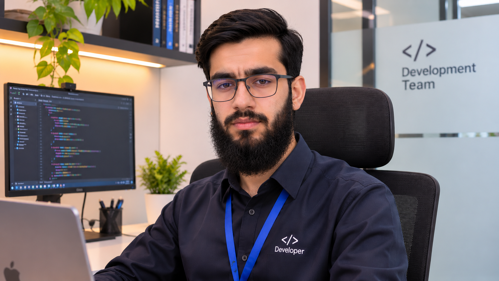
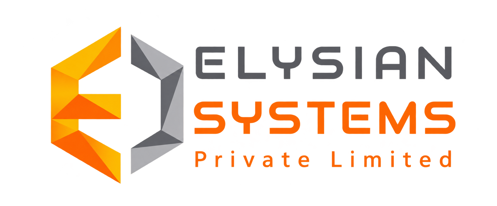

The interface
Structure, style, and interaction.
HTMLCSSJavaScriptAngularBootstrapTailwind CSS
ABDUL REHMAN / FULL STACK DEVELOPER
Thoughtful interfaces. Practical applications.
I bring the frontend, backend, and data together.

A LITTLE ABOUT ME
I'm Abdul Rehman, a Full Stack Developer who enjoys turning ideas into useful web applications.
I work across interfaces, backend functionality, and databases. My own Parking Management System is part of that hands-on journey.
Find my work on GitHubMY DEVELOPMENT TOOLKIT
The tools I use to bring
different parts together.
Choose a technology to explore its role in an application.
Structure, style, and interaction.
Connecting the experience behind the screen.
Programming and working with data.
Semantic page structure, headings, forms, and accessible content.
Responsive layouts, spacing, typography, transitions, and visual styling.
Browser events, interface behavior, validation, and dynamic content.
Component-based interfaces and structured frontend applications.
Application logic, reusable functions, and backend development.
Python-based web applications, request handling, and data models.
Programming fundamentals, data structures, and problem solving.
I've learned and worked with Bootstrap to build responsive layouts using its grid system and reusable UI components.
I've learned and used Tailwind CSS to style interfaces with utility classes, responsive layouts, and consistent spacing.
I've learned and worked with MySQL for storing application data, organizing tables, and writing SQL queries.
Organizing application records, defining relationships, and retrieving stored information.
DIFFERENT TOOLS. ONE CONNECTED EXPERIENCE.
THOUGHTFUL INTERFACES.CONNECTED BACKENDS.IDEAS THAT WORK.
Frontend ? Backend ? Data
SELECTED WORK
My own parking management project, built to put my development skills into practice.
View repositoryExplore the source and project details on GitHub.
PROFESSIONAL EXPERIENCE
From an internship to continuing
my professional journey at Elysian.

I started my journey at Elysian as an intern and now continue working with the company.
Completed my internship at Elysian, gaining experience in a professional environment.
Continuing my professional journey with the company while developing my skills through hands-on work.
FROM IDEA TO APPLICATION
A useful application needs a clear journey,
connected parts, and thoughtful checks.
Identify the task, map the screens, and decide what information needs to move between them.
Bring interface structure, interactions, backend logic, and data together around that task.
Review empty inputs, invalid values, small screens, and keyboard access before sharing the result.
KEEP EXPLORING